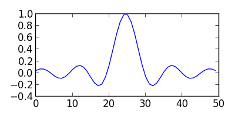

Python Source Code Blocks in Org Mode
Table of Contents
Org Mode support for Python

Introduction
Python is a high-level, readable, interpreted language which can be used for many common computing tasks. It runs on most modern operating systems. Python source code blocks are fully supported in Org Mode with a wide variety of Python-specific header arguments.
Python source code blocks in Org Mode can be used to define functions, filter and analyze data, create graphics and figures, and produce reproducible research papers.
Requirements and Setup
Python source code blocks in Org Mode require a working python installation. Python is included in Mac OS X and often in Gnu/Linux, and is easily available for Windows. Python installers are located at the Python download site.
Org Mode supports graphical output for LaTeX and HTML documents using Matplotlib.
To configure your emacs org-mode to use python, you’ll need to ensure
that org-babel-load-languages includes an entry for it.
Typically, org-babel-load-languages will contain many entries. The
example below omits other languages.
(org-babel-do-load-languages 'org-babel-load-languages '((python . t)))
Org Mode Features for Python Source Code Blocks
Header Arguments
Language-Specific Header Arguments
:results {output, value}: Output results come from whatever the python code prints on stdout. Value results are the value of the last expression evaluated in the code block. Value mode is the default (as with other languages). In value mode you can use the following subtypes:raw: value is inserted directlypp: value is pretty-printed by python usingpprint.pformat(%s), then insertedfile: value is interpreted as a filename to be interpolated when exporting; commonly used for graphics output.
:return: Appends areturnstatement to the end of the code block. Only when result-type is value, and not in session mode.:python: Name of the command for executing Python code.
Common Header Arguments
:session [name]: default is no session.:var data=data-table: Variables can be passed into python from org-mode tables as scalars or lists. See the org-mode manual for more details.:exports {code, results, both, none}: Standard babel option for what to export.
Sessions
Session mode is fully supported in python, including named sessions. In session mode, each block is run in the same long-running python interactive interpreter session. You can have multiple sessions, all independent.
Sessions can be used to define functions, set up variables, and share code between source blocks.
Return values
Session and non-session modes handle return values slightly
differently. In non-session mode, the python code block will be
wrapped in a function, so to return a value (in :results value mode)
you have to use a return statement. In session mode, the last
statement’s value will be returned if it is a top-level expression;
you should not use a return statement.
Non-session mode example
# use return statement
# Entire source block will get indented and used as the body of main()
#+begin_src python
def foo(x):
if x>0:
return x+1
else:
return x-1
return foo(5)
#+end_src
#+RESULTS:
: 6
Session mode example
# don't use return statement
#+begin_src python :session
def foo(x):
if x>0:
return x+1
else:
return x-1
foo(1)
#+end_src
#+RESULTS:
: 2
A limitation of session-mode return values is that the final statement must be a top-level expression, otherwise nothing is returned.
For example, the code block below doesn’t return anything, because the final expression is an indented if/else block, not a top-level expression:
#+begin_src python :session :results value
import random
if random.randint(0,10) % 2 == 0:
"even"
else:
"odd"
#+end_src
#+RESULTS:
To return the value of an indented block, assign the value to a variable, and return that variable as the final top-level expression:
#+begin_src python :session :results value
import random
if random.randint(0,10) % 2 == 0:
ret = "even"
else:
ret = "odd"
ret
#+end_src
#+RESULTS:
: even
Graphics
To return plots, save the figure to a file, return the filename, and
set the header argument :results file.
For example:
#+begin_src python :session :results file import matplotlib import matplotlib.pyplot as plt fig=plt.figure(figsize=(3,2)) plt.plot([1,3,2]) fig.tight_layout() fname = 'images/myfig.pdf' plt.savefig(fname) fname # return this to org-mode #+end_src #+RESULTS: [[file:images/myfig.pdf]]
You can use noweb to reduce the boilerplate of saving and returning the filename; see the example below.
If you are using matplotlib for graphics, you may have to set the
backend explicitly to a PDF or PNG or other file-exporting backend
when using session mode, for example by calling
matplotlib.use('Agg'). See also Additional examples.
Noweb
Noweb syntax allows references between code blocks. One situation where this is useful is when you have some boilerplate code you need to repeat across many code blocks, and want to hide during export.
Below are examples of how this can be useful for returning matplotlib figures and pandas dataframes.
Plotting
Returning a plot from a ob-python block requires saving the figure to
a file and returning the filename. In the example below, we extract
this to a separate block that can be referred to by other code
blocks. The :noweb strip-export header argument means to allow noweb
syntax, but to hide the inserted code during export.
#+name: savefig #+begin_src python :var figname="plot.svg" width=5 height=5 :exports none return f"""plt.savefig('{figname}', width={width}, height={height}) '{figname}'""" #+end_src #+header: :noweb strip-export #+begin_src python :results value file :session :exports both import matplotlib, numpy import matplotlib.pyplot as plt fig=plt.figure(figsize=(4,2)) x=numpy.linspace(-15,15) plt.plot(numpy.sin(x)/x) fig.tight_layout() <<savefig(figname="plot.png", width=10, height=5)>> #+end_src
Pandas dataframes
In the below example, we use the external tabulate package to convert a pandas Dataframe into org-mode format, but wrap it in a noweb block so we can hide the conversion during export.
#+name: pd2org #+begin_src python :var df="df" :exports none return f"return tabulate({df}, headers={df}.columns, tablefmt='orgtbl')" #+end_src #+header: :prologue from tabulate import tabulate #+header: :noweb strip-export #+begin_src python :results value raw :exports both import pandas as pd df = pd.DataFrame({ "a": [1,2,3], "b": [4,5,6] }) <<pd2org("df")>> #+end_src #+RESULTS: | | a | b | |---+---+---| | 0 | 1 | 4 | | 1 | 2 | 5 | | 2 | 3 | 6 |
Additional examples
- Hello World!
#+begin_src python :results output
print("Hello, world!")
#+end_src
#+RESULTS:
: Hello, world!
- Inline calling:
Two plus two equals src_python{return(2+2)}
when exported, e.g. to HTML or LaTeX/PDF, becomes:
Two plus two equals 4
- Extracting data from an org-mode table
#+tblname: data_table | a | 1 | | b | 2 | | c | 3 | #+begin_src python :var val=1 :var data=data_table # Return row specified by val. # In non-session mode, use return to return results. return(data[val]) #+end_src #+RESULTS: | b | 2 |
- Plotting
#+begin_src python :results file
import matplotlib, numpy
matplotlib.use('Agg')
import matplotlib.pyplot as plt
fig=plt.figure(figsize=(4,2))
x=numpy.linspace(-15,15)
plt.plot(numpy.sin(x)/x)
fig.tight_layout()
plt.savefig('images/python-matplot-fig.png')
return 'images/python-matplot-fig.png' # return filename to org-mode
#+end_src
#+RESULTS:
[[file:images/python-matplot-fig.png]]
